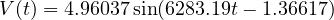
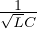
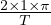

Writing out these terms and , choosing only n=1 in the summation, we get

With the frequency ω = 6283.19, this is close to the frequency of resonance which is ω∘ =

= 6324.56. Indeed ω1 =
is closest to the resonant frequency, so we can conclude that the first term of the fourier sum has the most contribution to the output amplitude V out of the circuit. So the first term of the fourier sum is deemed a good enough approximation. The phase shift is 1.36617 radians. The amplitude would be ≈ 5V.